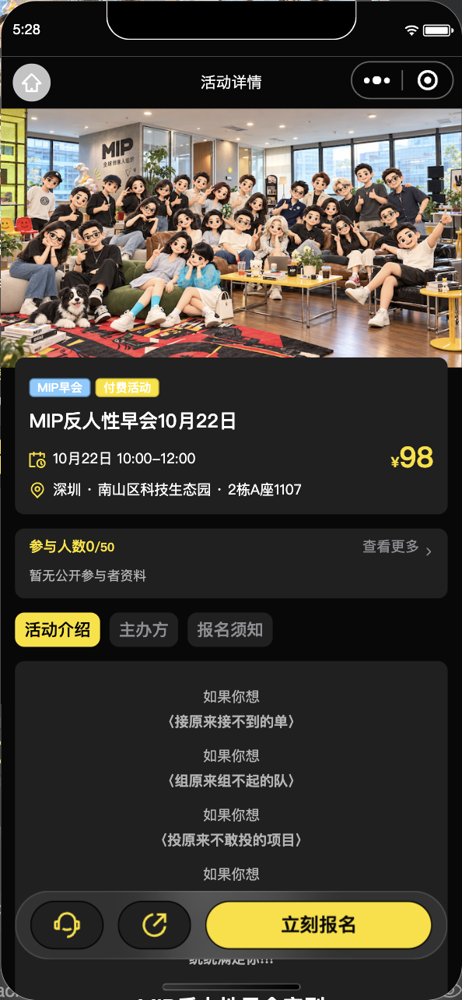
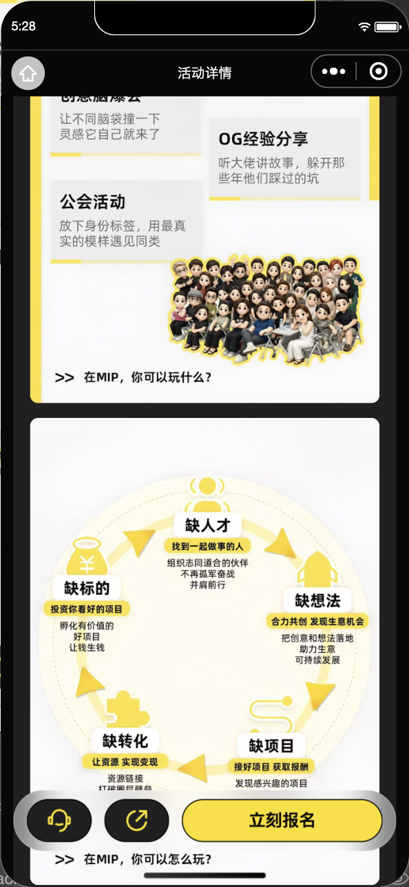

2026-10-20 · 生产环境小程序上传；测试与生产管理后台已发布。运行代码 ef57257b494bcf450efa83146655d5e35b4de621。合并 MIW-126/supa-ai，包含此前图文、玩家免费以及后台性能修复。
| 项目 | 修改前 | 修改后 |
|---|---|---|
| 支付唤起 | 进入收银台前多做一次订单查询；等待时缺乏明确反馈。 | 直接创建支付再唤起收银台；显示“正在拉起支付…”遮罩，阻止重复操作。取消与异常均清理遮罩。 |
| 支付结果 | 链路调整需要同步校验旧对账门禁。 | 门禁与新链路一致；服务端核验才判断已支付，不能确认则保留待核验状态。新增慢请求、取消、失败与待核验跳转回归。 |
| 活动图文 | 订单等页面把 HTML 当普通文本；主办方图片在 iPhone 富文本中留白。 | 共用安全富文本处理；图片解析为可用 HTTPS 来源。新生产包实拍显示主办方三张图片，实际 iPhone 仍待用户复测。 |
| 后台图片 | 加载中继续输入可能停在占位；临时签名过期后未刷新。 | 三栏图片加载、签名刷新及预览已修复。本轮重新读取测试三栏各两图与生产主办方三图，三个视口均正常。 |
| 玩家免费 | 付费活动没有按玩家身份减免费用的配置。 | 每活动“玩家免费”开关，默认关闭；开启后有效玩家免费、嘉宾按票价支付，已有订单金额保持。资格和金额由服务端决定。 |
| 基础压缩 | 沿用现有上传基础压缩，未额外引入新的图片优化服务；具体图片压缩率取决于原图和格式。 | |
| 后台性能 | 首屏静态资源约 2.93MB，每次重复传输。 | 两个后台 gzip 后约 0.89MB；哈希资源使用浏览器缓存，再次访问静态资源传输 0 字节。HTML 不缓存。生产四个关键函数常驻、数据库关闭自动暂停，详见独立性能报告。 |
完整 verify:all：小程序 1833、后台接口 331、后台界面 258 项全部通过。上传前比对 2382 个源文件与该次门禁完全一致。生产函数名前缀通过，测试函数名不在包中；TDesign 嵌套依赖树齐全。微信平台上传回执成功：版本 1.0.4，主包 1,764,377 字节，低于 2MB。
两个后台均完成真实 HTTPS 登录、权限及读取检查；三种视口 1280×720、1440×900、390×844 无横向溢出或 pageerror。编辑器和预览图片均实际加载；未点击保存、未改生产数据。线上主脚本解压后与发布前保存的原始资源逐字节相同，gzip;q=0 正确禁用压缩。原有 public 文件生产25个、测试33个保持不变；生产默认别名已切至新 Web 数字版本2，旧版本常驻已移除。
微信开发者工具，390×844 逻辑视口，连接生产活动；三张主办方图均为1200×1600。以下是实际页面截图，已检查图片出现在 rich-text 内容中，不仅是图片解码测试。


本次无新视觉原型，不用自制图充当原型。支付遮罩目前以测试验证，缺少真实手机收银台前后截图。
查看脱敏验证记录 · 后台性能详情 · 原图文与玩家免费对照